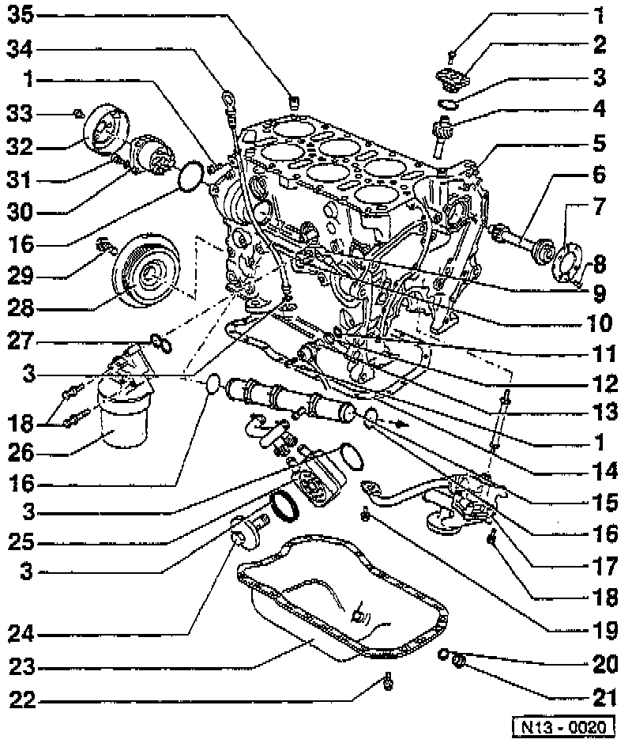
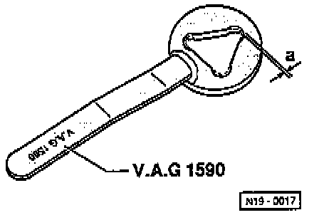

Section III - Cylinder Block
SECTION III
LEGEND
1 Mounting Bolt
2 Oil Pump Drive Cover
3 O-Ring
4 Oil Pump Drive
5 Cylinder Block
6 Intermediate Shaft
7 Thrust Washer
8 Intermediate Shaft Thrust Washer Bolt
9 Knock Sensor 2
10 Knock Sensor Mount Bolt
11 O-ring
12 Spacer Ring
13 Engine Speed Sensor
14 Oil Pan Gasket
15 Coolant Line
16 O-ring
17 Oil Pump
18 Mounting Bolt
19 Oil Pressure Pipe Bolt
20 Seal
21 Oil Drain Plug
22 Oil Pan Bolt
23 Oil Pan
24 Oil Cooler Cover
25 Oil Cooler
26 Oil Filter Housing
27 Oil Filter Housing Gasket
28 Vibration Damper
29 Vibration Damper Bolt
30 Coolant (Water) Pump
31 Coolant (Water) Pump
32 Coolant (Water) Pump Pulley
33 Coolant (Water) Pump Pulley Bolt
34 Dipstick
35 Oil Check Valve
NOTE: During removal and installation procedures, refer to the component location illustration above and component notes below.
COMPONENT NOTES
Mounting Bolt (1)
- Tighten to: 10 Nm (7 ft. lbs.).
O-ring (3)
- Always replace.
- Lubricate with oil before assembling.
Intermediate Shaft Thrust Washer Bolt (8)
- Tighten to: 10 Nm (7 ft. lbs.).
- Use locking fluid D6, or equivalent.
Knock Sensor Mount Bolt (10)
- Tighten to: 20 Nm (15 ft. lbs.).
- Tightening torque influences the function of the knock sensor.
O-ring (11)
- Replace if damaged.
Engine Speed Sensor (13)
- When instating coat contact surface of sensor with AMV 174 004 01, or equivalent.
Oil Pan Gasket (14)
- Replace if damaged.
- Before installing gasket, coat sump flange/cylinder block flange with "D2" or equivalent.
Coolant Line (15)
- To thermostat housing.
- Removing and installing, refer to Cooling System.
O-ring (16)
- Always replace.
Oil Pump (17)
- Dismantling and assembling, refer to Engine Lubrication.
- Coat oil pressure pipe on cylinder block and oil pump housing with AMV 188 001 02, or equivalent.
Mounting Bolt (18)
- Tighten to: 25 Nm (18 ft. lbs.).
Oil Pressure Pipe Bolt (19)
- Tighten to: 10 Nm (7 ft. lbs.).
- Secure with locking fluid D6, or equivalent.
Seal (20)
- Always replace.
Oil Drain Plug (21)
- Tighten to: 30 Nm (22 ft. lbs.).
Oil Pan Bolt (22)
- Tighten to: 15 Nm (11 ft. lbs.).
Oil Pan (23)
- Clean sealing surface before installing.
Oil Cooler Cover (24)
- Tighten to: 25 Nm (18 ft. lbs.).
Oil Cooler (25)
- Coat contact area outside the seal with AMV 188 100 02, or equivalent.
- Ensure clearance with adjacent components.
Oil Filter Housing Gasket (27)
- Always replace.
- Note fitting position.
- Lubricate with oil before installing.
Vibration Damper Bolt (29)
- Tighten in two stages:
- 1st stage, tighten to: 120 Nm (88 ft. lbs.).
- 2nd stage, turn an additional 90° (1/4 turn).
- Counter-hold with 3273 to loosen and tighten.
Coolant (Water) Pump (30)
- Check shaft for ease of movement.
- Removal and installation, refer to Cooling System.
Coolant (Water) Pump Mounting Bolt (31)
- Tighten to: 20 Nm (18 ft. lbs.).
Coolant (Water) Pump Pulley Bolt (33)
- Use holder tool No. V.A.G 1590, or equivalent to loosen and tighten.

NOTE: Due to the modified bolts for secureing the coolant (water) pump pulley, file out the three corners which have already been rounded an additional 1.0 mm as shown in the illustration.
Oil Check Valve (35)
- Note installed position.
- Clean if dirty.